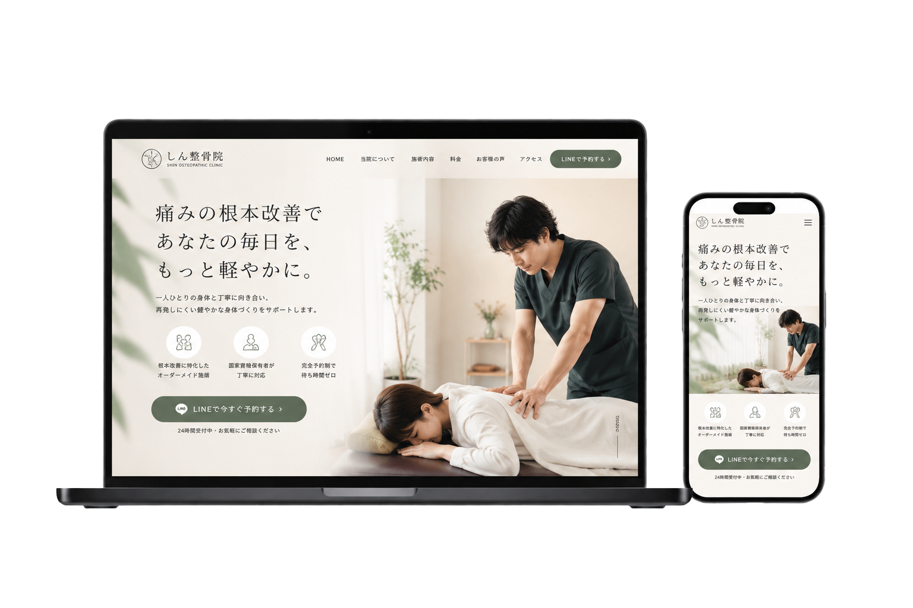

WORKS / CONCEPT LP
Concept
LP Design
整骨院向け
ランディングページ提案
整骨院・整体院向けの集客を想定して制作した
ランディングページデザイン案です。
初めて来院する方にも安心感が伝わるよう、
信頼性と予約導線を重視して設計しています。

PURPOSE
想定した課題
ホームページはあるが問い合わせが少ない
サービスの強みが伝わらない
スマホから予約しづらい
広告やSNSの受け皿がない
競合との差別化ができていない
CONCEPT
コンセプト
初めて来院する方の不安を減らし、
安心して予約できる導線を設計。
実績・お客様の声・施術の流れを整理し、
問い合わせにつながる構成を意識しました。
DESIGN
デザインポイント
01
清潔感
安心して相談できる印象を与える、落ち着いたデザイン。
02
信頼感
実績やお客様の声を見やすく配置し、不安を軽減。
03
スマホ最適化
スマートフォンからでも見やすく、予約しやすい構成。
04
予約導線強化
問い合わせボタンや予約導線を分かりやすく配置。
05
情報設計
施術内容・料金・アクセスを整理し、迷わず確認できる構成。
FLOW
LP構成
ファーストビュー
選ばれる理由
施術内容
お客様の声
料金案内
アクセス
お問い合わせ
POINT
提案ポイント
地域ビジネスでは、
「安心できそう」と感じてもらうことが重要です。
見た目だけでなく、
予約や問い合わせにつながる導線設計を意識しています。
NOTICE
Concept Work
※本ページは提案用デザインサンプルです。
実案件ではなく、整骨院向けLP制作イメージとして制作しています。
業種やサービス内容に合わせた
オリジナルLPを制作します。
整骨院・整体院・スクール・店舗ビジネス向けの
LP制作もお気軽にご相談ください。